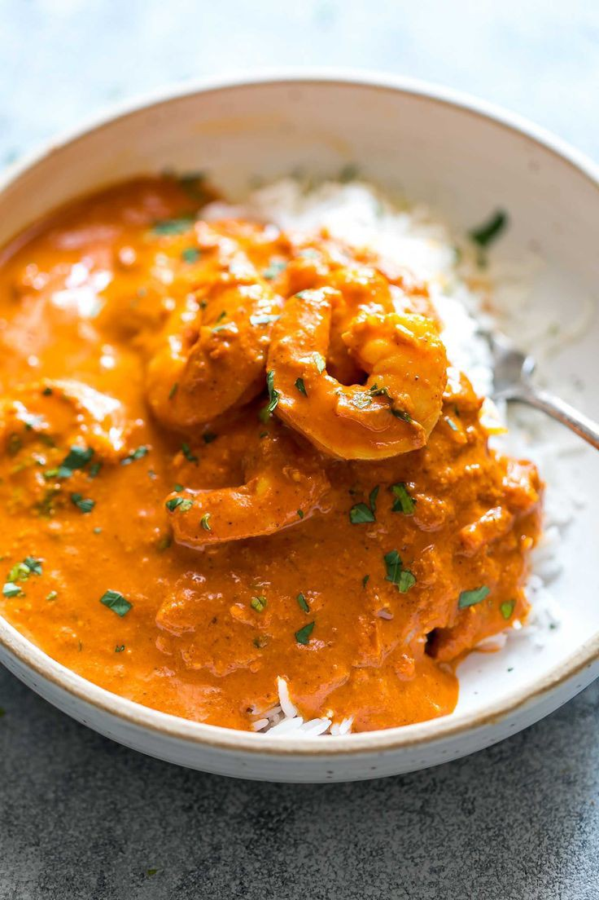
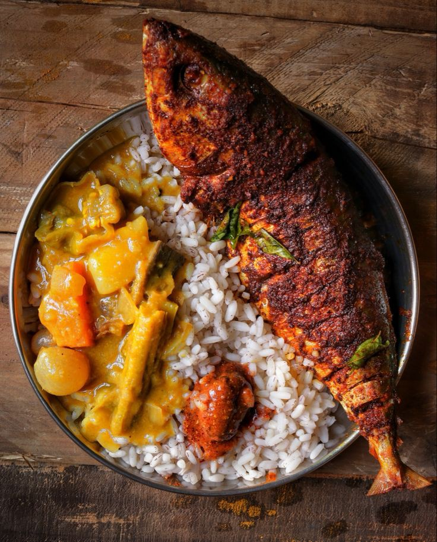
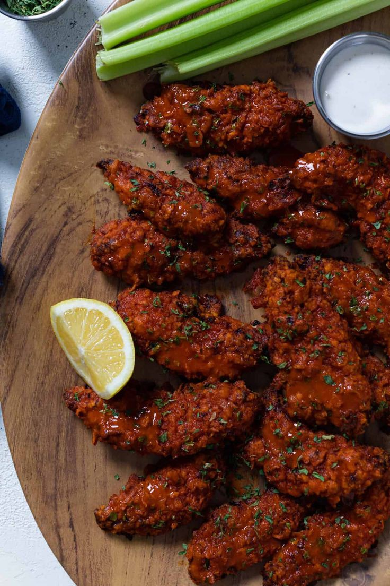
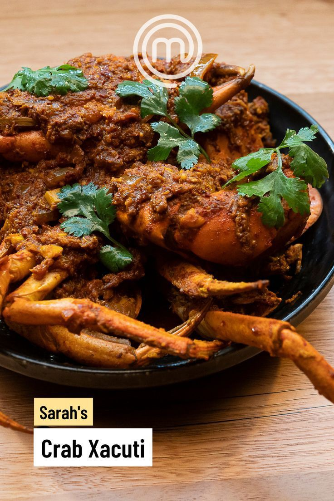
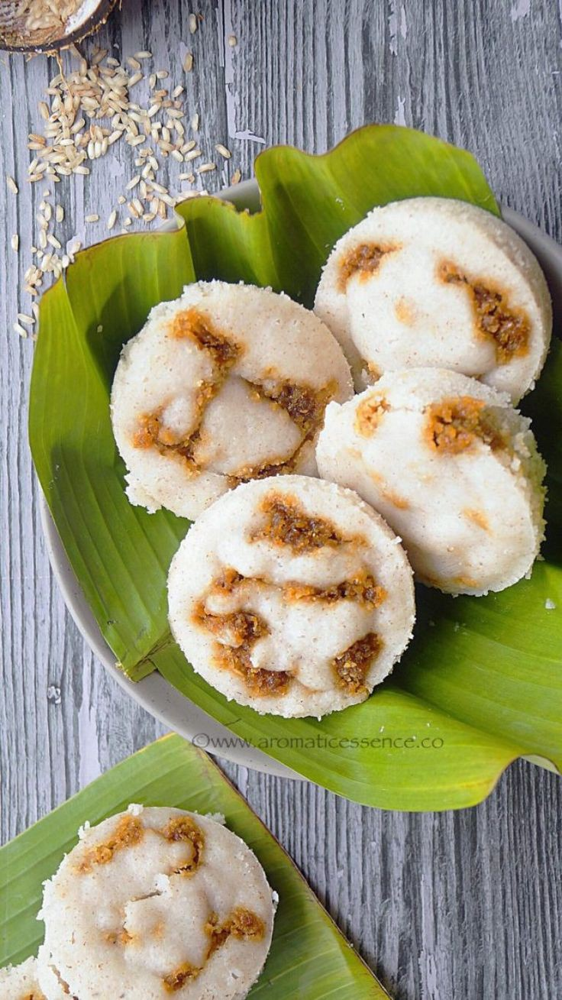

Goa
Since Goa is locatted on the west coast of india, along the shore of the arabian Sea, Goan cuisine is dominated by spices and flavours. The staple food of Goa is rice and fish curry. Most of the dishes incorporate coconuts, rice, fish, pork, meat and local spices like down.Here is list of 18 must try dishes that examplify food of Goa.
Goan and curry
Kingfish |
Chicken cafreal |
Crab wacuti
Sannas |